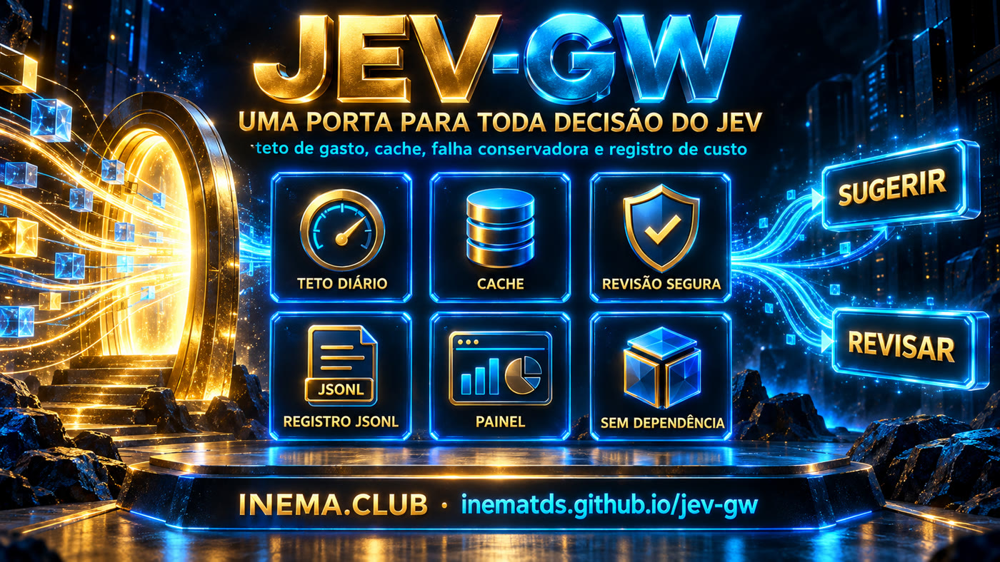

A spending limit, cache, and cost logging for every Jev query. And when Jev goes down, your system doesn’t go down with it: the response becomes a request for human review.

Each integration point reinvents error handling, nobody knows how much was spent that day, and when the API goes down, the system goes down with it. The gateway is the single entry point that solves this once.
A dollar amount per day, checked before for each query. If it exceeds the limit, it becomes a human review—not a way to discover the damage afterward.
Jev down, wrong key, timeout, unexpected response: it all returns review. No infrastructure failure is raised as an exception for the caller.
A JSONL line with cost, latency, and decision. The state — where your customer’s data lives — isn’t recorded.
Six steps, always in this order—and the order was chosen, not drawn at random.
A response already in the cache costs nothing, so there’s no reason to block it because of a spending limit. Otherwise, a system that hit its limit would lose access even to what it already paid for.
Checking afterward would mean checking the damage, not preventing it.
Thresholds come from your domain, not the model. Email triage and clinical triage use the same Jev with different thresholds.
The document ARQUITETURA.md explains each module, the failure contract, and what the gateway no does.
No framework, no database, no queue, no pip install. The key is required only for the first actual query.
The entire gateway uses only the standard library.
python3 --versionTypeSafe directly or through OpenRouter. Only when making an actual query—tests and examples run without it.
export TYPESAFE_API_KEY=... # or: OPENROUTER_API_KEY + JEV_PROVIDER=openrouter
Copy the folder jev_gw/ into your project if you prefer—it’s self-contained by design.
git clone https://github.com/inematds/jev-gw.git
All three call the same function. There’s no logic that only the server has.
The 23 tests use a controlled evaluator—the test suite doesn’t spend a cent.
git clone https://github.com/inematds/jev-gw.git cd jev-gw && python3 -m unittest discover -s testes # Ran 23 tests ... OK
No extra process, no open port. It’s the most direct way to embed it.
from jev_gw import decidir saida = decidir(pedido) if saida['acao'] == 'suggest': encaminhar(saida['resposta']['answers']['fila']['choice']) else: fila_de_revisao(saida['motivo']) # includes “Jev went down”
Listening only on 127.0.0.1 — the gateway keeps your key.
python3 -m jev_gw servir # jev-gw listening at http://127.0.0.1:8770 (dashboard at /painel) curl -X POST localhost:8770/decidir \ -H 'content-type: application/json' -d @pedido.json
It’s the Jev API’s own format: context and one or more questions with alternatives.
{
"model": "jev-1.13.0",
"state": "Cliente: comprei ontem e quero devolver, nem abri a caixa.",
"questions": {
"fila": {
"type": "choice",
"instructions": "Para qual fila encaminhar?",
"criteria": {
"reembolso": "Pedido de devolução ou estorno",
"suporte": "Dúvida de uso ou defeito",
"insuficiente": "Não dá para decidir com o que está escrito"
}
}
}
}
Everything is configured through environment variables, with working defaults. 0 the gateway shuts down at the limit.
export JEV_GW_TETO_DIARIO=1.00 # dollars per day export JEV_GW_TTL_CACHE=900 # seconds a response remains valid export JEV_GW_TIMEOUT=5 # seconds per query
A dashboard in your browser, or JSON in the terminal to add to your monitoring.
python3 -m jev_gw custo # {"chamadas": 2, "consultas_reais": 1, "cache": 1, "gasto_usd": 1.6e-05, ...} http://127.0.0.1:8770/painel # daily spend, latency, latest calls
Only one error is raised as an exception: a request outside Jev’s contract, which is your bug and needs to be surfaced. Everything else is a decision.
# 200 decision made — including “review” because Jev went down # 422 valid request, but outside Jev's contract # 400 malformed JSON or invalid option # exceeding the limit returns 200, not 429: for the caller, it isn’t an error, # it is a decision to route for review
A real Jev query through OpenRouter, followed immediately by the same query again.
Decision reembolso, confidence 1.0.
610 ms · US$ 0.0000155
Served from cache.
0 ms · US$ 0.00
Returned review logged the reason, and the client continued. No exceptions.
Raw evidence: reports/smoke-2026-09-22.jsonl. This is an integration and contract test — not a decision quality benchmark, and no savings are claimed without comparable measurements.
Actual status as of 09/22/2026, with no promises about what hasn’t been written yet.